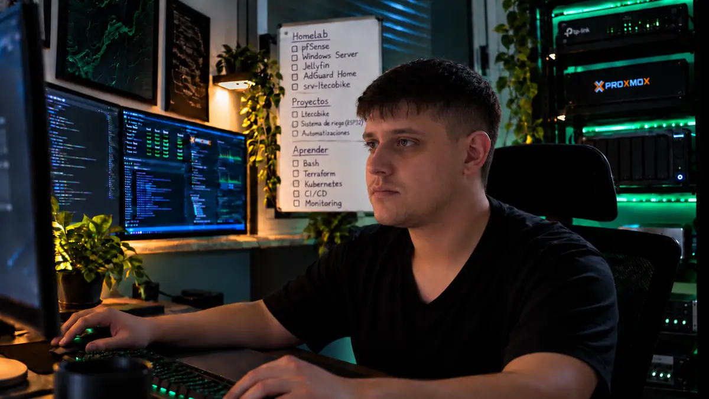

Ltecobike — Sistema de gestión
Gestión de ventas, vehículos, stock, clientes y distribuidores para un negocio familiar. Desarrollo, despliegue y mantenimiento.
Explorar caso técnicoSoy estudiante de Redes y Software. Desarrollo y mantengo un sistema de gestión para un negocio real y construyo entornos de virtualización, redes y automatización en mi homelab.

Conocé qué construí, cómo lo abordé y qué partes están documentadas o en evolución.
Gestión de ventas, vehículos, stock, clientes y distribuidores para un negocio familiar. Desarrollo, despliegue y mantenimiento.
Explorar caso técnicoMáquinas virtuales, contenedores, servicios y prácticas de diagnóstico en un laboratorio personal.
Ver arquitectura y servicios
Proyecto académico de marketplace. Participé en la infraestructura y configuración del entorno de datos para las pruebas.
Ver módulos y demoPrototipo de control local y simulación web para riego de ladrillos ecológicos. Integración hidráulica pendiente.
Conocer el prototipoConstruyo funcionalidades, trabajo con bases de datos y colaboro en sistemas con distintas capas.
Configuro servicios Linux, máquinas virtuales y contenedores en entornos de práctica y proyectos.
Investigo problemas, reviso registros y verifico resultados antes de considerar algo resuelto.